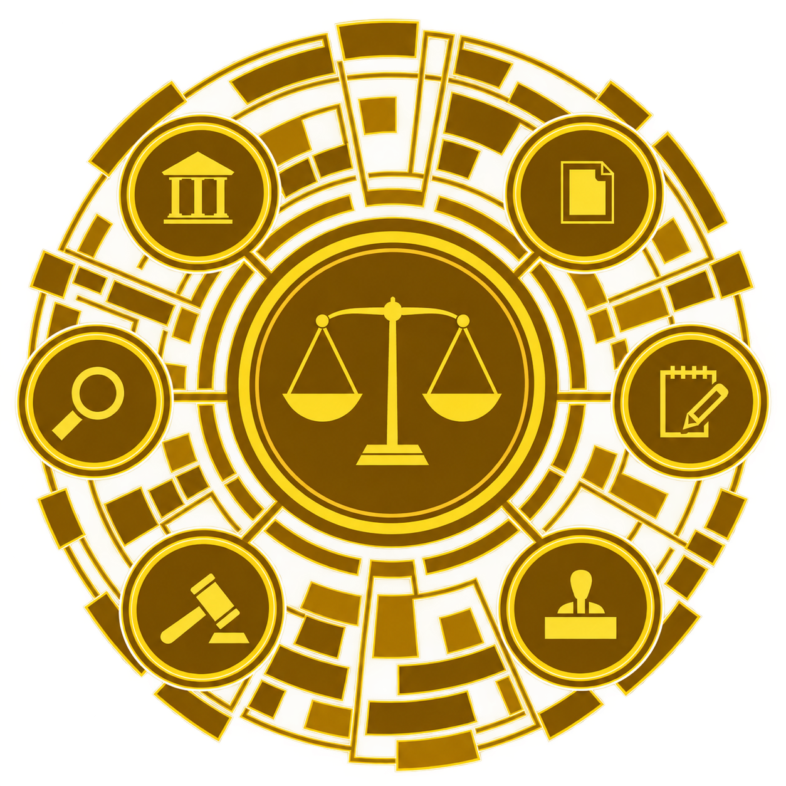

Remote legal support for businesses building in technology, data, and emerging digital markets.
Book a callPhilippine data protection regulation is getting stricter. Generic policies and templates are not enough. Compliance requires a clear understanding of your legal obligations under the Data Privacy Act, practical implementation, and documentation that reflects how your organization actually operates, not a copy-pasted framework.
Legal support is structured around what you need: outsourced DPO services, training and mentoring for your existing DPO or privacy team, individual compliance documents, or end-to-end development of your data protection framework.
Engagements are handled directly, one-on-one, with continuity and confidentiality, and advice tailored to your organization rather than a standardized package. With over 14 years of legal experience, including service as National Legal Officer for the UN's International Organization for Migration (IOM), the focus is on turning data protection requirements into compliance measures your team can actually run.
Whether you need a DPO, support for your existing privacy function, a single document, or a full compliance framework, the engagement scales to what your organization needs.
Content creation is a business. As that business grows, so do the legal issues behind it. Brand partnerships, sponsorships, UGC arrangements, content licensing, usage rights, exclusivity clauses, and management agreements all require contracts that protect your interests, not templates written for someone else’s deal.
For creators building a business around their audience and content, legal considerations extend beyond contracts. E-commerce activity brings regulatory requirements, and collecting information from customers, subscribers, or followers creates data protection and privacy obligations under the Data Privacy Act.
Contracts and commercial legal work are a core area of practice. Support is available at any stage of a creator’s business: reviewing or negotiating a single brand deal, drafting agreements, addressing e-commerce and data protection compliance, or providing ongoing legal support as the business grows.
Practical legal counsel for the business behind your influence.
As businesses adopt new technologies, they need clear legal frameworks that protect their operations and define responsibilities between the parties involved.
Core services include SaaS agreements, software licensing, IT services and outsourcing agreements, API agreements, data processing agreements, and data sharing agreements.
AI-related services include AI use policies, responsible AI governance frameworks, vendor and procurement agreements, AI-specific contractual clauses, data and privacy review, confidentiality provisions, and risk and compliance documentation.
The goal is practical legal structures that support innovation while managing risk. Straightforward guidance, tailored to how your business actually works.

Beyond specialized digital, technology, and commercial work, full-service legal support remains available for the ordinary legal needs of individuals and businesses, backed by extensive litigation experience in Philippine courts and administrative bodies.
Services include legal consultations, affidavits and other legal documents, pleadings, complaints, memoranda, legal opinions, negotiations, hearings, and representation in civil, criminal, labor, and administrative matters.
From preparing a single legal document to handling a matter through investigation, hearings, and trial, the service provides practical legal representation grounded in a strong litigation track record and extensive Philippine practice.
Some lawyers avoid the courtroom. I’ll meet you there.
International organizations and NGOs operate within complex contractual, donor, regulatory, and operational environments. Contracts often need to accommodate institutional policies, donor requirements, government regulations, and the practical realities of program implementation.
With experience as National Legal Officer in the Contract Law Division of the International Organization for Migration (IOM), the United Nations migration agency, legal support is available for organizations that need experienced contract counsel without maintaining a large in-house legal function.
Support includes contract drafting and review, negotiation, amendments, donor and funding agreements, project implementation agreements, service and vendor contracts, leases, construction and procurement-related agreements, and other operational contracts.
The focus is on identifying legal and operational risks early, clarifying contractual obligations, and producing agreements that work in the real-world context in which programs are delivered.
Whether you need support with a single agreement, a specific contractual issue, or ongoing contract review and advisory work, engagements can be structured around the organization’s needs.
I am a Philippine-licensed lawyer with more than 14 years of experience advising businesses, organizations, and individuals on commercial contracts, data protection, and various legal matters.
I provide legal support in contracts and commercial law, data protection and DPO services, digital and technology law, AI-related legal and compliance, and litigation services. My approach is practical and risk-based: understand how a client actually operates, identify the legal issues that matter, and develop solutions that can be implemented in practice.
I developed substantial international and commercial experience as an International Independent Legal Consultant and as National Legal Officer in the Contract Law Division of the International Organization for Migration (IOM), the United Nations migration agency. I handled institutional and commercial contracts supporting international programs and operations and worked with governments, UN agencies, NGOs, donors, and other international stakeholders.
Alongside my commercial practice, I have extensive experience in civil, criminal, labor, corporate, and administrative matters, including litigation, negotiations, mediation, and dispute resolution. I continue to practice litigation and value the preparation, discipline, and advocacy that effective legal representation requires.
I began my legal practice at Jimeno Cope & David Law Offices, gaining experience in labor, contract, corporate, civil, and criminal law. I later joined Raymond Fortun Law Offices, now Fortun and Santos Law Offices, where I strengthened my practice in criminal and civil litigation, contracts, and corporate law.
For inquiries, engagements, or to discuss a matter that falls within these areas of practice, reach out directly.